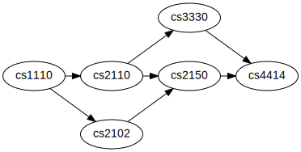

Go up to the Labs table of contents page
To become familiar with representing directed acyclic graphs (DAGs), topological sorting, and the traveling salesperson problem.
A graph is a set of vertices connected by edges. In a directed graph, an edge is an ordered pair of vertices, where you can follow an edge from one vertex to another. In a directed acyclic graph (DAG), no path starts and ends at the same vertex. A topological sort orders the vertices in a DAG such that any edge from vertex i to vertex j satisfies i < j.
make! It should do TWO tasks: compile your code, and call doxygen. See the pre-lab section for more information about required make target.-o output for the final link step). It will default to a.exe (or a.out), which is what is desired. The Makefile doxygen part should be the same as the pre-lab.make! It should do TWO tasks: compile your code, and call doxygen. See the pre-lab section for more information about required make target.First, read through the Doxygen tutorial. That tutorial then directs you to look though the doxygen manual, which you can download in PDF form (you have to extract the PDF file) or browse it online (which is easier to view). Start with the “Documenting the code” chapter, as the previous chapters are covered in the tutorial.
For all the code deliverables in this lab, you will need to document all of your code as well as the code that we provide using doxygen. You will also need to submit a Doxyfile that properly generates the documentation (which really just means changing the INPUT line in the file). We are not expecting you to have read through the entire user manual. But we are expecting you to document your code beyond the example provided. Just putting in those tags is not what we are looking for. Thus, you should read some of the user manual to get an idea of what you can do with Doxygen, and you should do some of these things in your code.
Recall from lecture that given a graph G = (V,E), a topological sort of a directed acyclic graph is a linear listing of the vertices such that, for all pairs of vertices v,w ∈ V, v is listed before w in the topological sort if (v,w) ∈ E (i.e. if there is an edge from v to w in the graph, then v must be listed before w in the topological sort). This implies that if there is a path from v to w (not just an edge), then v must still list before w in the topological sort.
For the programming part of this lab, you will need to write a program that can perform a topological sort. This problem is specified in the next section. The specification is similar to that found in the International Collegiate Programming Contests – a problem description, followed by a detailed explanation of the input and the output.
How you represent your graph is up to you – choices include: node-with-pointers, adjacency list, adjacency matrix, and others. Just keep in mind that you will have to do a topological sort on this graph. The program must read in a list of directed edges from a file and (internally) generate the graph from it.
You don’t need to print out the graph. The algorithm for a topological sort can be found in the slides and lecture recordings, as well as in the readings.
Your program must be completely contained in a single file named topological.cpp, and must take in the input file name as a single command-line parameter. There is no limit (other than the memory size) to the number of nodes that we may provide (i.e. it could be very large, not just 7, as in the example here).
To read in strings from a file in the C++ manner, see the fileio2.cpp (src) file.
To test your code with a larger input, see the prelab-test-full.txt file; the prelab-test-small.txt is what is described in the problem below.
Your Makefile should have only one target, which you can name anything you want. This target should do two things: compile your code, and run doxygen. You can have two tabbed lines after the target specifier, which is the easiest way to accomplish this. In other words, we are just going to call make, and we want it to both compile your code and create your doxygen documentation. The in-lab Makefile should have the same dual-purpose target.
It turns out that one of our teaching assistants did not take all of the pre-requisite computer science courses! That TA is all ready to graduate, but it turns that CS 1110 was never taken. The department came down hard, and decided to make that TA take all of the courses over again, to have the proper pre-requisite classes completed for each successive class. But the TA just got a job at Microsoft, and can only take one course a semester while working full time. In what order should the teaching assistant take the list of required courses to properly fulfill the pre-requisites this time around?
Given the following course pre-requisite graph:

There are multiple valid orders that the courses can be taken in; each is a valid topological sorts:
Any one of these topological sorts is sufficient.
The program will take a single command-line parameter. This parameter will specify the file name that contains the input.
The input file will consist of a series of lines that each designate a directed edge. Each line will have two vertex names, separated by a single space; the edge is directed from the first to the second listed vertex name on a given line. Every vertex name is a series of alphanumeric characters only (a-z, A-Z, 0-9) without any spaces or punctuation. Note that case is relevant, so vertex abc is distinct from vertex ABC. The edges can be listed in any order.
The end of the input file is signified by two 0’s on the same line, separated by a single space.
You can assume that the provided graph is a directed acyclic graph, that it is weakly connected, and thus that there is at least one valid topological sort. You can further assume that there will not be more than 100 vertices in the graph.
The output is a valid topological sort of the vertices, each separated by one space, and all on one line. If there are multiple topological sorts, then any valid one is acceptable. No additional output!
Given the input file:
cs2110 cs2150
cs2102 cs2150
cs1110 cs2110
cs3330 cs4414
cs2150 cs4414
cs2110 cs3330
cs1110 cs2102
0 0
A valid topological sort would be
cs1110 cs2110 cs2102 cs3330 cs2150 cs4414
You are going to implement a program that will find a solution to the traveling salesman problem. This problem is known to be NP-complete, which means that there is no known efficient solution to the problem, and it is believed that an efficient solution does not exist. Thus, we will be implementing a rather inefficient solution – a brute-force method that tries every possible path combination.
The traveling salesman problem is as described in lecture. In brief, you start from a given city (your “home” city), and have to travel to a number of other cities before returning home. There is a fixed cost between any two cities (miles traveled, dollars spent, time taken, etc.). The goal of this algorithm is to find the path that travels to each of the cities, in any order, and that has the minimum cost. Note that it is really a cycle, as you have to start and end in the same city. Also note that the direction you travel in the cycle does not matter, as the distance is the same.
If you want more background on the Traveling Salesperson problem, you can see here.
The world we have chosen is Middle-Earth, the location of J.R.R. Tolkien’s Hobbit and Lord of the Rings books and movies. The middleearth.h and middleearth.cpp files, that you commented in the pre-lab, contain a class that will create a random 2-dimensional world. The “randomness” means that it will pick a given number of cities (or places), and randomly place them in the “world”. You can travel from any city to any other city, for a given cost (the distance). The city names are all from the books and movies, and can be seen at the beginning of the middleearth.cpp file – there is a textual description in the code as to what all the places are. The randomness of the world means that cities that are nowhere near each other in the books/movies might be right next to each other in the random world.
When your program is completed, you will need to specify five command-line parameters to execute the traveling salesperson problem. The parameters are, in order:
The skeleton code provided (traveling-skeleton.cpp (src)) already parses the command-line parameters properly.
There are a number of STL functions that will help you in writing this program. All of these algorithms (and more!) are provided in the <algorithms> header file. This file is already included by traveling-skeleton.cpp.
First, take a look at the random_shuffle() method in middleearth.cpp:
random_shuffle(cities.begin(), cities.end());
This method takes a vector, and will randomly shuffle it, similar to Java’s Collections.shuffle(). The parameters specify the amount of the vector that we want to shuffle. Because we want to shuffle the entire vector, we specify the beginning and end of the list, as shown. What we are actually doing is supplying two iterators which specify the range to shuffle. The .begin() and .end() methods provide iterators set to the beginning and end of the vector, respectively.
The sort() method has the same parameters as shuffle, and sorts the list. It is similar to Java’s Collections.sort() method. It returns no value.
The next_permutation() method will cycle through each and every permutation of the passed vector. It must start out with a sorted vector, and will move through each and every possible list ordering until it the vector ends up in reverse sorted order. It takes the same parameters as random_shuffle() and sort(). Note that it does not return a new permutation, but instead modifies the vector that is passed in (via the two iterators). It returns a bool – true if it found another permutation, or false if there are no more permutations to provide. Thus, it is often put into a while loop. For an example of using next_permutation() in a while loop, see here. This is a good way to iterate through each possible combination of cities to travel to.
The MiddleEarth class provides a number of methods to help you write your brute-force solution. You should be familiar with these from the pre-lab. The constructor is called by the skeleton code, and uses the parameters read in from the command line. The print() method will print out statistics of the world.
The printTable() method will print out a table of the distances between all cities. Different random seeds will produce different tables, obviously. This will be useful to help you debug your program. Redirect it to a file, and then load it up in a spreadsheet program (Excel may not like tab-separated values, but OpenOffice will be fine with it). We used to provide an Excel-ready format of this, but each of the different platforms (Mac OS X, Linux, Windows, as well as 32-bit versus 64-bit) will produce slightly different random worlds.
The getDistance() method will return the distance, as a float, between the two provided cities. In an effort to make your code as efficient as possible, getDistance() has the same running time as a hash table (usually Θ(1)). Lastly, getItinerary() will return a vector of the cities that you must visit. Note that the first city provided is the start (and thus end) city – you should remove this from the vector before you consider all possible cycles through the graph.
We provide the skeleton code for the algorithm – your job is to complete traveling.cpp.
printRoute(), as that will be useful when debugging your code. It should print a route in the form: Gorgoroth -> Khazad-dum -> Emyn Muil -> Minas Morgul -> Michel Delving -> Gorgoroth. Note that we aren’t picky about exactly how it’s printed, as long as it prints all the cities.computeDistance(). You can create a sample string vector to test it, and verify it against the distances in the output of printTable() (see above).main() method. Make sure that you can print out all the permutations of the list of destinations. Note that for n cities, there are n! possible permutations. Remember that the start city should not be permuted!Your final program should not print out every path tried, as there will be way too many of them. It should print out the shortest path as the last thing printed. You may print out a few paths (i.e. successively shorter paths), if that’s easier.
Note that you are determining a cycle of cities to visit. So if your cycle has the cities in reverse, then it’s still a valid solution.
Note that you already know your start city (if you don’t know how to determine this, you should really read the comments in middleearth.cpp, specifically for getItinerary()). This city is not to be permuted, as you will always start (and end) at that city. It’s the other cities that are going to be permuted through the calls to next_permutation().
Keep in mind that as you increase the size of the city tour, the running time increases exponentially. The computers in the Olsson 001 lab can probably compute about 200,000 routes per second in Linux (with well written and optimized code). Our 10-route cycle took 18 seconds under Linux. A 15 route cycle would take 2.5 months under Linux. A 20 route cycle would take 385,734 years under Linux! Realistically, you shouldn’t be trying anything with an itinerary greater than 9 or 10.
And when you are planning on testing long paths, you should really compile your code with the -O2 compiler option. It can speed up the program by a factor of two.
To time your code, enter time before the command on the command-line. For example:
student@cassiopeia:~/labs/lab11$ time ./a.out 20 20 20 14 8
Your journey will take you along the path Hobbiton -> Moria -> Weathertop -> The Grey Havens ->
Cirith Ungol -> Orodruin -> Dagorlad -> Edoras -> Hollin -> Hobbiton
and will have length 54.9025
real 0m0.105s
user 0m0.076s
sys 0m0.020s
student@cassiopeia:~/labs/lab11$
The time we are looking at is the “user” time; this is how long it took to run the user’s program. The “sys” line is how much time the system was doing things during the program execution, such as I/O. The “real” time is the “wall time” – meaning if you had a stop watch, it would report the “real” time. The “real” time includes many other things, such as other tasks you are doing on the computer – if you have an animation running in a web browser, for example, it will increase the “real” time, as the system is spending some effort rendering those animations. We’ll only use the “user” time for this lab. Note that you should NOT print out every path – you can print out some, as described above. But printing out every path will cause the computer to spend a lot of time on I/O, which will increase all of the times.
For this lab, we will keep the size of the 2-D world fixed at (20,20). These are the first two command line parameters. We’ll also create a world of 20 cities (chosen from the 40 names in middleearth.cpp) – this is the third command line parameter.
If the random seed (the fourth parameter) is 14, then the path lengths and paths for the various itinerary lengths are listed below. Because we are explicitly setting the random seed, it should produce the exact same results each time – and thus your code should also produce the same results.
Important note: The method for determining the random seed is different on different systems. So using a random seed of 14 (which is what we used), you may get different results on different systems. We provide the Virtual Box results here, and other 32-bit and 64-bit Linux installations should be similar. But your results may differ! In particular, if you have a different flavor of Linux installed, use a Mac, etc. The machines in Olsson 001 have the same results as shown below. Also note that the direction of your path can be reversed – it’s the same distance (and thus still the shortest path), even if the path order is reversed. You should use the output of your printTable() over what is listed below.
The Linux results for a random seed of 14, world size of 20x20 with 20 cities, and various path lengths:
When compiled with -O2, the computation of a path of length 10 took 18 seconds on Linux.
Your final program needs to both be able to compile and run with the specified command-line parameters.
Your Makefile should have only one target, which you can name anything you want. This target should do two things: compile your code, and run doxygen. You can have two tabbed lines after the target specifier, which is the easiest way to accomplish this. In other words, we are just going to call make, and we want it to both compile your code and create your doxygen documentation. The in-lab Makefile should have the same dual-purpose target.
There are two parts to the post-lab: a complexity analysis of your code, as well as investigating acceleration techniques for the traveling salesperson problem.
The deliverable for the post-lab is a PDF document named postlab11.pdf. It must be in PDF format! See How to convert a file to PDF for details.
For this part of the post-lab, we want you to do a time and space complexity analysis of both of your pre-lab code and your in-lab code. How long is your algorithm? In addition to a big-Theta notation, give an explanation as to why. And a big-Oh and big-Omega, if you can compute those as well.
We all know that the solution for the traveling salesman is inefficient. So inefficient that a 20 route tour through Middle Earth (i.e. using the command-line parameters 20 20 20 14 20) would take over 3 hundred thousand years when running on Linux, assuming the computer can check about 200,000 paths per second. We could run it on a more efficient computer – this would help, but not much. If you are trying to compute a 61-route tour, then there are more possibilities than there are atoms in the known universe. So it’s not likely that you will be able to push that many electrons through your computer, even if you could wait the 1070 years required. You might be able to lower that somewhat if you used a more efficient computer – perhaps to 1069 years. That’s still longer than the expected life of the universe.
It’s safe to say that we can all agree that this problem is very inefficient. Yet the world record for the longest traveling salesman solution is a whopping 85,900 cities! See the here for details.
Let’s do a bit of math. If we assume that a properly coded solution runs in Θ(n!) time (yours may be different, by the way, but probably not by much), then this size input set would take 85960! steps. That’s 9.61 * 10386,526 (yes, there are more than 1/3 of a million digits in this number). Let’s assume we could get a fast program to compute 1 million possible paths per second. With 60 seconds per minute, 60 minutes per hour, 24 hours per day, and 365.25 days per year, that will take 3.04 * 10386,516 years (the exponent lowered by 10). With a number this big, a faster computer will not make much of a difference.
The people who computed the 85,900 city traveling salesperson problem obviously did not wait forever for it to compute. In fact, they managed to compute it in 136 CPU years! It took far less time to complete (say, 6 months or so), as it ran in parallel on multiple computers.
To accomplish this, they had to use a number of acceleration techniques.
The second part of the post-lab is for you to research other acceleration techniques that can be used to speed up the traveling salesman problem. You are welcome to view the Wikipedia page – however, we also know what’s on the Wikipedia page. So just copying that information down will get you no credit – you need to understand the acceleration techniques, and write them in your OWN words. Basically, we want you to investigate and understand this, and not just paraphrase what Wikipedia says. We are going to read the Wikipedia page (and other similar pages) before we grade the post-lab.
Your report should include information on 3 such acceleration techniques (again, feel free to start with the 3 that Wikipedia mentions). You should write sufficient text on each to explain how it would work, the running time, and an estimate of how much faster it would make your code. You don’t need to implement any of these techniques – just understand (at the high level) how they work.
You should discuss at least one approximation technique (ones that get a reasonable answer, but not necessarily an exact answer) and at least one exact acceleration technique. Your third one can be either.